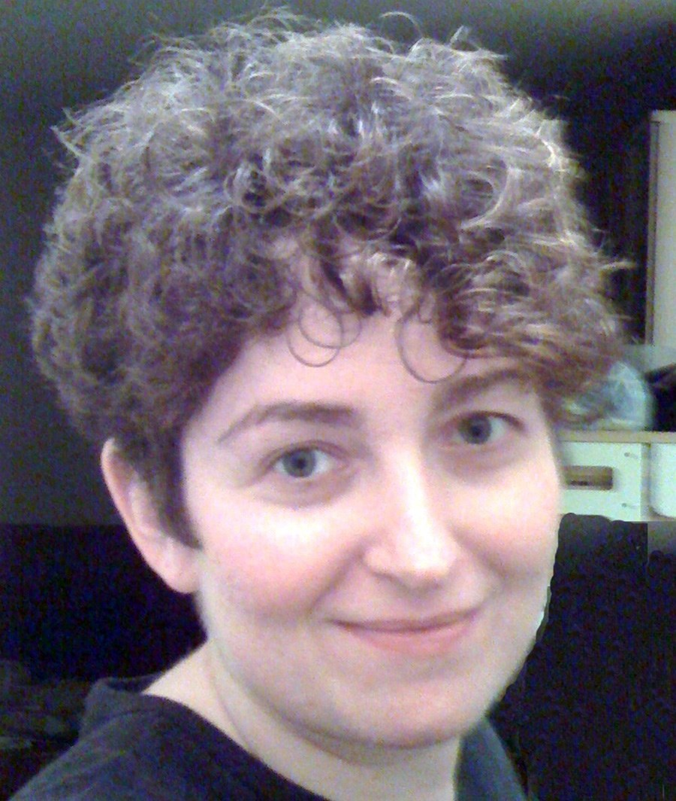

Massively Multilingual NLU 2022
A Workshop Colocated with EMNLP 2022 in Abu Dhabi and Online
Let’s scale natural language understanding technology to every language on Earth!
By 2023 there will be over 8 billion virtual assistants worldwide, the majority of which will be on smartphones. Additionally, over 100 million smart speakers have been sold, most of which exclusively use a voice interface and require Natural Language Understanding (NLU) during every user interaction in order to function. However, even as we approach the point in which there will be more virtual assistants than people in the world, major virtual assistants still only support a small fraction of the world’s languages. This limitation is driven by the lack of labeled data, the expense associated with human-based quality assurance, model maintenance and update costs, and more. Innovation is how we will jump these hurdles. The vision of this workshop is to help propel natural language understanding technology into the 50-language, 100-language, and even the 1,000-language regime, both for production systems and for research endeavors.
News
- 20 Apr: The MASSIVE dataset was released publicly. Anyone can now start modeling on the data in preparation for the release of the MMNLU-22 evaluation set on July 25th.
Important Dates
- Jul 25th: Release of the MMNLU-22 Competition evaluation set
- Aug 8th: End of MMNLU-22 Competition
- Aug 15th: ACL Rolling Review (ARR) submission deadline
- Aug 29th: OpenReview submission deadline
- Sep 30th: Acceptance notifications
- Oct 16th: Camera ready deadline
- Dec 7th or 8th: Massively Multilingual NLU 2022 Workshop
Invited Speakers
 Heng Ji, UIUC, USA
Heng Ji, UIUC, USA
Pascale Fung, HKUST, China
Géraldine Damnati, Orange Labs, France
Dilek Hakkani-Tür, Amazon Alexa, USA
Kathy McKeown, Columbia University, USA
 Anna Rumshisky, UMass Lowell, USA
Workshop Organizers
Jack FitzGerald, Amazon Alexa, USA
Kay Rottmann, Amazon Alexa, Germany
Julia Hirschberg, Columbia University, USA
Anna Rumshisky, UMass Lowell, USA
 Mohit Bansal, UNC, USA
Mohit Bansal, UNC, USA
Competition (Shared Tasks) Organizers
Charith Peris, Amazon Alexa, USA
Jack FitzGerald, Amazon Alexa, USA